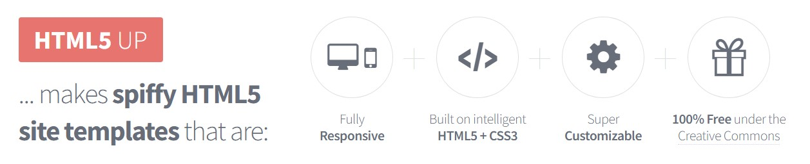
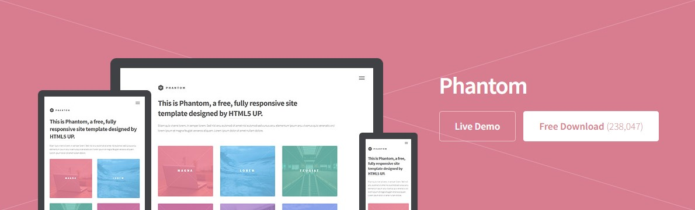

Verkefni 1
 Ég notaði viðmótið "Phantom" frá html5up.net.
Ég var einnig búinn að grúskast aðeins áður með HTML og CSS (með hjálp frá www.w3schools.com) þannig ég vissi hvernig átti að breyta sumum hlutum. Til dæmis gerði ég textann dekkri á nokkrum stöðum og ég eyddi út footer-inum sem fylgdi viðmótinu.
Eftir að hafa gert ferilskrá með mynd af mér fór ég svo í það að setja síðuna inná Github með því að nota Git bash.
Mér hlakkar til að læra meira af námskeiðinu.